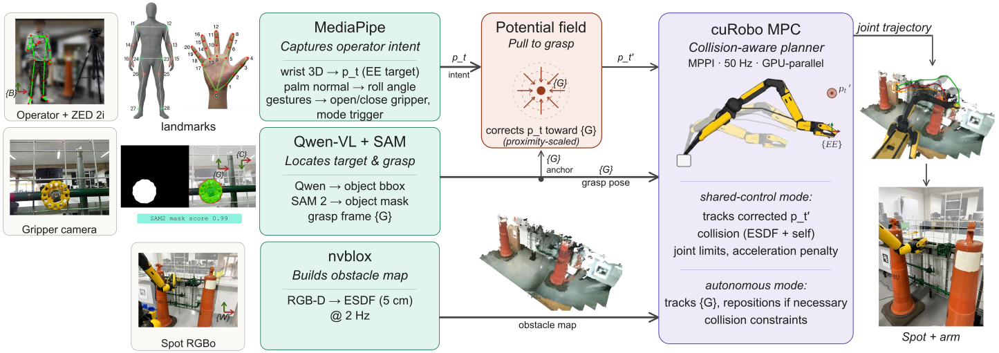
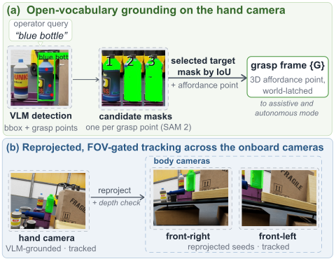
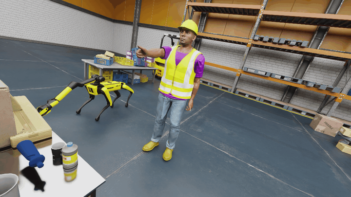
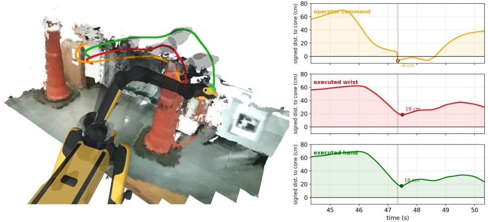
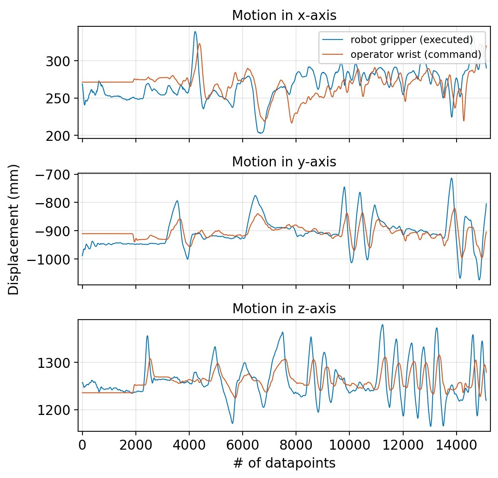

Teleoperating a manipulator through a camera interface is hard exactly where it matters most: the final, cluttered centimeters. We present a shared-autonomy framework in which a single RGB-D camera captures the operator's arm and hand gestures with no wearables, fiducials, or calibration; the target is named by a free-form text prompt, grounded by a vision-language model and tracked across the robot's onboard cameras; and every commanded motion runs through a GPU-accelerated collision-aware MPC against an online volumetric map, while a potential field pulls the operator's reference onto the grounded target during the final approach. A gesture-triggered autonomous mode completes the grasp on the same target with no separate pipeline.
Validated on a Boston Dynamics Spot with the 6-DoF Spot Arm on real industrial tasks: wheel-valve operation and a drill pick-and-place, plus a deliberate collision stress test and motion-capture accuracy evaluation.
Industrial valve manipulation · pick-and-place · collision-avoidance stress test · autonomous execution

A ZED 2i + MediaPipe decode wrist motion into an end-effector reference with an online-estimated workspace scale; the palm normal sets gripper roll, gestures switch modes.
MediaPipe · RGB-DA free-form prompt ("wheel valve") is grounded by Qwen3-VL in the gripper camera and tracked across three onboard cameras by SAM 2, yielding a world-latched grasp frame kept out of the obstacle map.
Qwen3-VL · SAM 2nvblox fuses onboard stereo depth into a TSDF/ESDF; cuRobo's MPPI MPC tracks the reference at 50 Hz under self- and environment-collision constraints.
nvblox · cuRobo · 50 HzInside a 0.4 m radius, an attractive potential field bends the operator's reference onto the grasp frame while the operator keeps authority; a two-finger gesture hands the grasp to the autonomous mode.
potential field · autonomy
Open-vocabulary grounding. The prompt is grounded in the gripper camera and propagated to the onboard cameras, producing a grasp frame that is continuously separated from the static obstacle map.

Simulation stack. The same pipeline drives Spot in Isaac Sim, with the arm under cuRobo MPC and the legs under a learned locomotion policy.

Collision-aware shared control. Left: reconstructed workspace with the commanded (orange), executed wrist (red), and executed hand (green) trajectories. Right: signed distance of each to the nearest obstacle. The operator deliberately drives the command 6 cm into the obstacle; the executed wrist and hand never come closer than 19 cm and 18 cm.

Teleoperation tracking accuracy. Operator wrist command vs. executed gripper motion along each axis, both measured by an OptiTrack system. The full pipeline achieves an RMSE of 59 mm; deviations behave as lag during fast reversals, not drift, so precision is preserved exactly where it matters — the slow final approach.
| Condition | Valve | Pick & place |
|---|---|---|
| Teleoperation only | 0/5 | 1/5 |
| + Collision avoidance (C) | 2/5 | 2/5 |
| + Potential field (PF) | 3/5 | 4/5 |
| Full framework (C + PF) | 5/5 | 5/5 |
| Autonomous execution | 4/5 | 4/5 |
Five trials per condition; contact with the structure ends a trial as failure. Collision avoidance alone still misses grasps; assistance alone still contacts the structure. Together, every trial succeeds.
@article{dasilva2026perception,
title = {From Perception to Assistance: Open-Vocabulary Shared Autonomy for Robotic Manipulation},
author = {da Silva, Murilo Vinicius},
journal = {Submitted to IEEE Robotics and Automation Letters},
year = {2026}
}